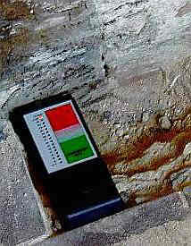
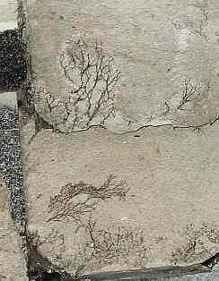
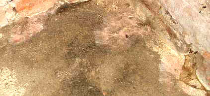
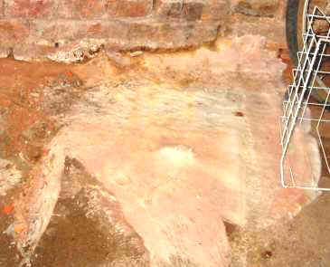

Weitere Datenübertragung Ihres Webseitenbesuchs an Google durch ein Opt-Out-Cookie stoppen - Klick!
Weitere Datenübertragung Ihres Webseitenbesuchs an Google durch ein Opt-Out-Cookie stoppen - Klick!
Stop transferring your visit data to Google by a Opt-Out-Cookie - click!: Stop Google Analytics
Cookie Info. Datenschutzerklärung

 Altbau und Denkmalpflege Informationen - Startseite / Impressum
Altbau und Denkmalpflege Informationen - Startseite / Impressum
Inhaltsverzeichnis - Sitemap - über 1.500 Druckseiten unabhängige Bauinformationen
Fragen??? +++ Alles & noch viel mehr auf DVD +++ Gegengutachten - auch zur "aufsteigenden Feuchte" +++ Baustoffseite
Kostengünstiges Instandsetzen von Burgen, Schlössern, Herrenhäusern, Villen - Ratgeber zu Kauf, Finanzierung, Planung (PDF eBook)
Altbauten kostengünstig sanieren:
Heiße Tipps gegen Sanierpfusch (PDF eBook + Druckversion ===>)
Baubücher - kurz und frech rezensiert +++
Die härtesten Bücher gegen den Klimaschwindel - Kurz + deftig rezensiert
Nitrate (Salpeter), Sulfate & Chloride & andere löslichen Salze in der Wand - Know-How & Wie beseitigen?
Fauler Zauber: Sanierputz +++
Wirksam gegen feuchte Wände - Die Hüllflächentemperierung
The Fraud of the Rising Damp - the Hoax with Salt, Moisture and Dampness in buildings

Trocknung nasser Wände + aufsteigende Feuchtigkeit 7
Kondensat und Hygroskopie im naßkalten Keller und sonstwo
Aufsteigende Feuchte Kapitelübersicht
1 - Einführung zur Problemlage
2 - Ein schrecklicher "Trockenlegungsfall"
3 - Feuchtequellen
4 - Ziegel-Mauerwerk und Aufsteigende Feuchte
5 - Naturstein-Mauerwerk und Aufsteigende Feuchte
6 - Nachträgliche Horizontalabdichtung historischen Mauerwerks? - Mauerwerksversalzung
7 - Kondensat und Regen
8 - Trockenlegung oder Bauwerksschäden durch Horizontalisolierung?
9 - Trockenlegungsschwindel - die Marketingtricks
10 - Elektroosmose und die typischen Trockenleger-Ausreden bei Mißerfolg
11 - Trockenlegungsexperten? - Planer und Gutachter
12 - Trockenlegung - Industrieberatung oder der gesunde Menschenverstand? Probleme und Lösungen
13 - Mauertrockenlegung - Die klassischen Fehler
14 - Nasse Wände sanieren - Was sagt die Wissenschaft?
15 - Mauerfeuchte woher? Zum historischen und wissenschaftlichen Hintergrund
2. Kondensation
Der Mauerfuß steckt im kalten Erdreich. An ihm kondensiert täglich, auch und vor allem im Sommerhalbjahr,
eine Unmenge von Luftfeuchte als Kondenswasser. Natürlich gilt das auch für die im Vergleich zur Raumluft
oder gar zuströmenden Wärmluft von Außen kühleren Bauteile innen wie Innen- und
Außenwände, Decken und Böden, Mobiliar und Lagergut. Nicht gerade wenige Hausbesitzer
kommen an schwülheißen Sommertagen auf die Idee, ausgerechnet jetzt ihre dumpfkühlen Kellerlöcher
mit Außenluft zu "belüften", um sie mittels weit geöffneter, auf Durchzug und sekundenschnellen
Luftaustausch gestellter Kellerfenster, man höre und staune - zu TROCKNEN!
In Wirklichkeit klatscht dann das Kondensat einer ca. 30grädigen und feuchtebeladenen Sommerluft in rauen Unmengen
in die so um 14 bis 16 Grad Celsius unterkühlten Kellerbauteile, je kühler, umso mehr. Unbarmherzige Bauphysik!
Und was soll dieses eingedrungene Kondensat jemals wieder heraustrocknen, wenn im nassen Loch nie eine ausreichende
Heizung läuft?
Verschärft wird das Einwandern nasser Feuchte und feuchter Nässe aus der Raumluft in die Baukonstruktion auch
bei schadsalzbefrachteten - hygroskopisch aktiven - Oberflächen. Schon ab nur 50 Prozent Luftfeuchte geht beispielsweise
der Mauersalpeter (Kalknitrat) in flüssige Phase über und sorgt dann für jahraus und -ein patschnasse
Böden und Wände im Keller. Was soll denn eine Horizontalisolierung gegen einkondensierendes und hygroskopisch
im Bauteil aufgenommenes Wasser bewirken?
Wirksame Gegenmaßnahmen:
- Wandtemperierung gegen Kondensation, auch als Unterstützung für die Austrocknung,
die sonst jahrelang dauern kann,
- Einfachfenster als Sollkondensatfläche
(entlastet Innenwand von Feuchtekondensation, vermeidet sicher Schimmelwachstum),
- dauernde Luftentfeuchtung (gut geeignet für zu feuchte Kellerräume)
- Entsalzung hygroskopisch aktiver Schadsalzfrachten mit dafür geeigneten Techniken,
- Wandbeschichtung mit offenporigen, perfekt kapillaraktiv trocknenden und feuchteverträglichen Beschichtungen
zum Abpuffern der Feuchtespitzen. Kapillarsperrende Polymere wie in
Dispersions-, Silikonharz- und "Mineralfarben/Dispersionssilikatfarben" dürfen da nicht drin sein.
3. Beregnung

So mauerbenässend sah es 1838 in Partenkirchen aus,
jedenfalls nach Meinung des Malers Heinrich Bürkel.
Der Mauerfuß wird vom Dachvorsprung oft zu wenig vor direkter
und Spritzwasserberegnung geschützt. Durch stillgelegte
Kamine, undichte Rinnen und Grundleitungen, ein Muß bei Verlegung in unzureichend verdichteten
Baugrubenauffüllungen (Standard des Handwerks, weils eh keiner sieht, was verfüllt
und verkleidet wird!), dringt drückendes Wasser in und durch die Wand und in
das Keller- bzw. Sockelmauerwerk. Auch bodenberührende
Außenputze saugen sich gerne mit Salz und Wasser voll. Sogar undichte Hauswasserleitungen
(alte Bleirohre?) können die Ursache für grandiose Auffeuchtung
von Mauerwerk sein. Was hilft aber eine Horizontalisolierung gegen das alles?
Hier ist handwerkliches und denkmalpflegerisches Verständnis gefragt,
um bestands- und konstruktionsgerechte Lösungen zu finden. Auch mit
einem vom Boden abgetrennten offenporigen zement- und traßfreien
Mörtel (kein teurer Sanierputz!, der in Wahrheit nur als feuchteverstärkender
Sperrputz funktioniert). Fachmännisch ausgeführt, bringt
das dauerhafte Lösungen, trotz aller mißlungenen Versuche mit
angeblichen "Denkmalputzen". Probleme wie Streusalzbelastung
und Spritzwasser bei zu knappem Dachüberstand, konzentrierte Wassersammlung
am Sockel bei wasserabweisenden Fassaden usw. bleiben natürlich außen vor.
Zum Abschluß:
Aufsteigende Feuchte, in der Fachliteratur und von interessierten Kreisen
oft behauptet und mit nur stationär gültigen Laborformeln (nach
Hagen-Poiseulle, Grün, Mayer/Wittmann) für einschichtige Körper
"berechenbar", wird am Bauwerk nie als solche bewiesen. Ein kapillar
vollgesogener Porenbetonstein in der Laborwanne, erdbodennahe Mauerdurchfeuchtungen
und nasse Keller in reicher Zahl oder nach innen bzw. oben abnehmende Salz-
und Feuchtegehalte im Mauerwerk sind kein Beweis für aufsteigende Feuchte im historischen Bestand.

Patschnass würfelbrüchig vermorschte Innenwandschwellen
sind kein Beweis für kapillar aufsteigende Feuchte aus dem feuchten Keller!

Auch nicht angewachsene Porenschwammyzele unter den Bodenplatten des Erdgeschosses

Und ebenso nicht wieder ankeimende "Hausschwammwatte" über abgebrannten Resten auf der Kellerwandverfugung

Auch Hausschwamm auf dem Kellerboden beweist keine aufsteigende Feuchte aus dem Untergrund in den Fußboden


Auch hier nicht. (Foto: Aus Beratungsfall, Bild: R. Gundelach)

Ebensowenig wie verschimmelte Orgel-Innerei Nässe
aus dem Untergund unter dem Kirchfußboden. Die teuer einzubringende
Bodenunterfolisierung, schlimmstenfalls plus Dämmstoffverbuddelung
kann also flugs eingespart werden, kommt nur ein bisserl Sachverstand ins Spiel.
Wissenschaftlich zuverlässige Praxisuntersuchungen beweisen im
Gegenteil den maßgeblichen Einfluß der Salz- und Kondensatbelastung
(vgl. Kloster Maulbronn, Jahrbücher des Sonderforschungsbereichs 315,
Karlsruhe, Verlag Ernst und Sohn). Die Injektagematerialien
für Horizontalisolierungen sind in der Fachwelt ohnehin stark "umstritten". Gerade in feuchte
und versalzte Wände dringen sie nicht zuverlässig ein
(vgl. Venzmer (Hrsg.): Bautenschutzmittel, Verlag für Bauwesen, Berlin 1997)
und liefern meist zusätzliche Schadsalze, auf jeden Fall unsinnige Bauzerstörung.
Weiter? ===> Aufsteigende Feuchte Kapitel 8
Sind Sie Opfer von Trockenlegungsfirmen - hat Ihr Gutachter Aufsteigende Feuchte diagnostiziert? Rätseln Sie,
welches der teuren Trockenlegungs- / Entfeuchtungs- / Sanierungs-Angebote das richtige ist?
Dieser Aufklärungs-Knüller hilft bestimmt etwas weiter:
Wissenschaftsbetrug der Bauchemie und Geräteindustrie, Geschäftemacherei der Planerluschen, Schlechtachter,
Schwachverständigen sowie der Nepper, Schlepper, Bauernfänger und Handwerkspfuscher mit "Aufsteigender
Feuchte (engl.: Rising Damp)", Ursachen und Sanierung feuchter Wände:
Jeff Howell: The Rising Damp Myth
(Rezension in Deutsch)
Sonstige Nützlichkeiten und andere Meinungen für feuchte, nasse, abgesoffene, verschimmelte,
verpilzte und vermorschte Häuser - soweit es nicht um nutzlose Horizontalisolierung gegen
"aufsteigende Feuchte" geht, der manche industrieabhängige bzw. ahnungslose Autoren (wer es ist, verrate ich nicht,
ätsch!) - anhängen. Reihenfolge der Titel beinhaltet keinerlei Wertung!!!:
Altbau und Denkmalpflege Informationen Startseite